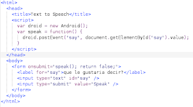
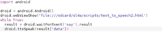
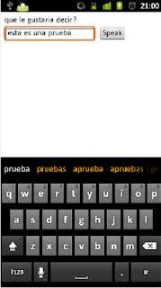

Introducción a webview en Android con python
Posted on sáb 02 abril 2011 in Tutorial Python en Android • 1 min read
La serie de widgets del SL4A que se ha explicado en el blog no son suficientes para realizar aplicaciones tal como las que se bajan del market de Android, pues existe una forma de aumentar las posibilidades en interfaz gráfica para Android y es usando webview.
Webview permite visualizar páginas html con contenidos en javascript.
En la página de SL4A tienen una introducción sobre webview.
Se tiene un archivo html llamado text_to_speech.html con código javascript, es un formulario html donde se le pasa un texto a reproducir.

Luego se tiene el código python en un archivo llamado webview.py. Se crea la instancia de android, se abre el archivo text_to_speech2.html, se espera por el evento tomando el resultado y reproduciendolo con text to speech.
import android
droid = android.Android()
droid.webViewShow('file:///sdcard/sl4a/scripts/text_to_speech2.html')
while True:
result = droid.waitForEvent('say').result
droid.ttsSpeak(result['data'])

La siguiente imagen muestra la pantalla de la página web.
Y la figura donde se muestra que se escribió un texto en el formulario, al darle clip al botón el celular reproduce el texto que se le paso al formulario.

===
¡Haz tu donativo! Si te gustó el artículo puedes realizar un donativo con Bitcoin (BTC) usando la billetera digital de tu preferencia a la siguiente dirección: 17MtNybhdkA9GV3UNS6BTwPcuhjXoPrSzV
O Escaneando el código QR desde billetera: